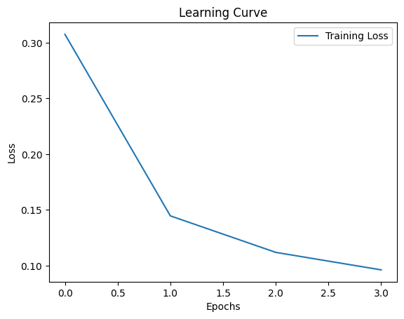
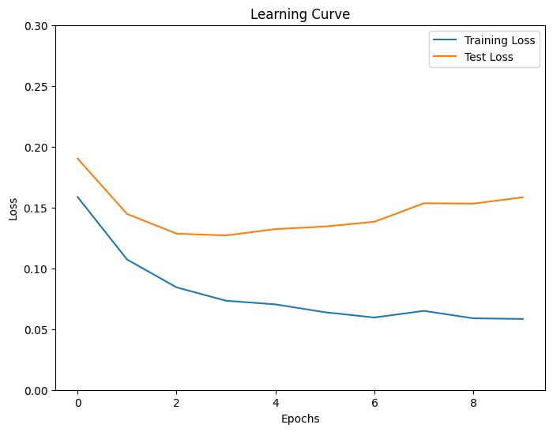

(Tut 0) ML/DL Pre-flight
Contents
(Tut 0) ML/DL Pre-flight#
%system top -b -n 1 | grep Cpu
%system free -m
[' total used free shared buff/cache available',
'Mem: 12982 617 9801 1 2563 12085',
'Swap: 0 0 0']
import numpy as np
import matplotlib.pyplot as plt
Load your data#
from sklearn.metrics import log_loss
import warnings
import matplotlib.pyplot as plt
from sklearn.datasets import fetch_openml
from sklearn.exceptions import ConvergenceWarning
from sklearn.neural_network import MLPClassifier
from sklearn.model_selection import train_test_split
# Load data from https://www.openml.org/d/554
X, y = fetch_openml(
"mnist_784", version=1, return_X_y=True, as_frame=False, parser="pandas"
)
X = X / 255.0
np.shape(X)
#np.unique(y)
(70000, 784)
import sys
print("Size of X: {} MB".format(sys.getsizeof(X)/(10**6)))
print("Size of y: {} MB".format(sys.getsizeof(y)/(10**6)))
Size of X: 439.040128 MB
Size of y: 0.560112 MB
def plot_rand_digit(X,y):
tmp_indx = np.random.randint(len(X))
image_data = np.reshape(X[tmp_indx],(28, 28))
plt.imshow(image_data, cmap='gray')
plt.colorbar()
plt.show()
print("extracted index: ", tmp_indx)
print("label is: ",y[tmp_indx])
return image_data,X[tmp_indx]
def plot_digit(tmp_indx, X,y):
image_data = np.reshape(X[tmp_indx],(28, 28))
plt.imshow(image_data, cmap='gray')
plt.colorbar()
plt.show()
print("label is: ",y[tmp_indx])
return image_data,X[tmp_indx]
def plot_image(image_data):
plt.imshow(image_data, cmap='gray')
plt.colorbar()
plt.show()
def image_2_X(tmp_image):
return tmp_image.reshape(28*28,)
#uncomment
#tmp_image, tmp_imX = plot_rand_digit(X,y)
# Split data into train partition and test partition
X_train, X_test, y_train, y_test = train_test_split(X, y, random_state=0, test_size=0.3)
mlp = MLPClassifier(
hidden_layer_sizes=(40,),
max_iter=4,
alpha=1e-4,
solver="sgd",
verbose=1,
random_state=1,
learning_rate_init=0.2,
)
#with warnings.catch_warnings():
# warnings.filterwarnings("ignore", category=ConvergenceWarning, module="sklearn")
mlp.fit(X_train, y_train)
print("Training set score: %f" % mlp.score(X_train, y_train))
print("Test set score: %f" % mlp.score(X_test, y_test))
Iteration 1, loss = 0.30763959
Iteration 2, loss = 0.14463751
Iteration 3, loss = 0.11186542
Iteration 4, loss = 0.09615766
/usr/local/lib/python3.10/dist-packages/sklearn/neural_network/_multilayer_perceptron.py:686: ConvergenceWarning: Stochastic Optimizer: Maximum iterations (4) reached and the optimization hasn't converged yet.
warnings.warn(
Training set score: 0.975184
Test set score: 0.961952
# N.b.:
print(np.shape(mlp.predict_proba(X[0].reshape(-1,1).T)))
(1, 10)
Plot the learning curve#
# Plot the learning curve
plt.plot(mlp.loss_curve_, label="Training Loss")
plt.xlabel("Epochs")
plt.ylabel("Loss")
plt.legend()
plt.title("Learning Curve")
plt.show()

mlp = MLPClassifier(
hidden_layer_sizes=(40,),
max_iter=1,
alpha=1e-4,
solver="sgd",
verbose=1,
random_state=1,
learning_rate_init=0.2,
warm_start=True, # Keep the learned weights between partial_fit calls
batch_size=200
)
num_epochs = 10
train_loss = []
test_loss = []
for epoch in range(num_epochs):
mlp.partial_fit(X_train, y_train, classes=np.unique(y))
train_loss.append(log_loss(y_train, mlp.predict_proba(X_train)))
test_loss.append(log_loss(y_test, mlp.predict_proba(X_test)))
print("Training set score: %f" % mlp.score(X_train, y_train))
print("Test set score: %f" % mlp.score(X_test, y_test))
Iteration 1, loss = 0.30763959
Iteration 2, loss = 0.14127103
Iteration 3, loss = 0.11035624
Iteration 4, loss = 0.09344541
Iteration 5, loss = 0.08102296
Iteration 6, loss = 0.07178889
Iteration 7, loss = 0.06375451
Iteration 8, loss = 0.05863240
Iteration 9, loss = 0.05515901
Iteration 10, loss = 0.04981513
Training set score: 0.981143
Test set score: 0.964476
plt.rcParams["figure.figsize"] = (8,6)
# Plot the learning curve
plt.plot(train_loss, label="Training Loss")
plt.plot(test_loss, label="Test Loss")
plt.xlabel("Epochs")
plt.ylabel("Loss")
plt.ylim(0.,0.3)
plt.legend()
plt.title("Learning Curve")
plt.show()

mlp = MLPClassifier(
hidden_layer_sizes=(40,),
max_iter=1,
alpha=1e-4,
solver="sgd",
verbose=1,
random_state=1,
learning_rate_init=0.2,
warm_start=True, # Keep the learned weights between partial_fit calls
batch_size=200
)
num_epochs = 3
train_loss = []
test_loss = []
for epoch in range(num_epochs):
mlp.partial_fit(X_train, y_train, classes=np.unique(y))
train_loss.append(log_loss(y_train, mlp.predict_proba(X_train)))
test_loss.append(log_loss(y_test, mlp.predict_proba(X_test)))
print("Training set score: %f" % mlp.score(X_train, y_train))
print("Test set score: %f" % mlp.score(X_test, y_test))
Iteration 1, loss = 0.30763959
Iteration 2, loss = 0.14127103
Iteration 3, loss = 0.11035624
Training set score: 0.974327
Test set score: 0.963095
Representation of your neural network#
!pip install nnv
Looking in indexes: https://pypi.org/simple, https://us-python.pkg.dev/colab-wheels/public/simple/
Requirement already satisfied: nnv in /usr/local/lib/python3.10/dist-packages (0.0.5)
from nnv import NNV
plt.rcParams["figure.figsize"] = (200,10)
layersList = [
{"title":"input\n", "units": 784, "color": "darkBlue"},
{"title":"hidden \n(relu)", "units": 40},
{"title":"output\n(softmax)", "units": 10,"color": "darkBlue"},
]
#NNV(layersList, max_num_nodes_visible=40, node_radius=5, spacing_layer=200, font_size=12).render(save_to_file="my_example_2.pdf")
Provide a representation of the neurons of your network#
print(np.shape(mlp.coefs_[0].T), np.shape(mlp.intercepts_[0].T))
print(np.shape(mlp.coefs_[1].T), np.shape(mlp.intercepts_[1].T))
(40, 784) (40,)
(10, 40) (10,)
mlp.coefs_[0].min()
-1.0110948061139695
plt.rcParams["figure.figsize"] = (8.0,6.0)
#uncomment
#fig, axes = plt.subplots(5, 8)
# use global min / max to ensure all weights are shown on the same scale
vmin, vmax = mlp.coefs_[0].min(), mlp.coefs_[0].max()
max_abs = np.max([np.abs(vmin), np.abs(vmax)])
for coef, ax in zip(mlp.coefs_[0].T, axes.ravel()):
#---matshow is used to display a matrix as an image
#uncomment
#im = ax.matshow(coef.reshape(28, 28), cmap=plt.cm.plasma, vmin=-max_abs, vmax=max_abs)
ax.set_xticks(())
ax.set_yticks(())
# Add a colorbar to the figure
#cbar = fig.colorbar(im, ax=axes.ravel().tolist())
plt.show()
print(vmin, vmax)
-1.0110948061139695 0.5733018937205047
#--- checks
#https://scikit-learn.org/stable/modules/generated/sklearn.neural_network.MLPClassifier.html
#coefs_: list of shape (n_layers - 1,)
#The ith element in the list represents the weight matrix corresponding to layer i.
np.shape(mlp.coefs_[0])
(784, 40)
len(mlp.coefs_[0][783])
40
np.shape(mlp.coefs_[1])
(40, 10)
#intercepts_: list of shape (n_layers - 1,)
#The ith element in the list represents the bias vector corresponding to layer i + 1.
print(np.shape(mlp.intercepts_[0]))
mlp.intercepts_[0]
(40,)
array([-0.15575706, -0.15400826, 0.06508577, 0.49742375, -0.07005818,
-0.10096713, 0.00309142, 0.05769386, -0.05570244, -0.02218003,
-0.04044906, -0.03663522, 0.12771604, 0.3598094 , -0.10272782,
-0.11523947, 0.02937951, -0.12281815, 0.12459668, 0.25668712,
0.21835264, 0.12890185, -0.03186991, -0.09561 , 0.22223194,
-0.17703044, -0.09829197, -0.31367624, 0.00655406, 0.1949957 ,
0.30697201, 0.02098709, 0.19564065, 0.14785048, -0.09733604,
0.042845 , 0.01779155, -0.14027736, -0.10658419, 0.39470569])
np.shape(mlp.intercepts_[1])
(10,)
Let’s make predictions#
# uncomment the following
#tmp_image, tmp_imX = plot_rand_digit(X,y)
#mlp.predict(tmp_imX.reshape(-1,1).T)
###################
# index 7560 ---> 2
# index 7561 ---> 9
###################
#tmp_image, tmp_imX = plot_digit(7561,X_test,y_test)
#mlp.predict(tmp_imX.reshape(-1,1).T)
# Rotate the array by 90 degrees
#rotated_image = np.rot90(tmp_image)
#rotated_image = np.rot90(rotated_image)
#plot_image(rotated_image)
#tmp_X = image_2_X(rotated_image)
#mlp.predict(tmp_X.reshape(-1,1).T)
Let’s represent in a dimensionally reduced space#
!pip install plotly
Looking in indexes: https://pypi.org/simple, https://us-python.pkg.dev/colab-wheels/public/simple/
Requirement already satisfied: plotly in /usr/local/lib/python3.10/dist-packages (5.13.1)
Requirement already satisfied: tenacity>=6.2.0 in /usr/local/lib/python3.10/dist-packages (from plotly) (8.2.2)
#from sklearn.manifold import TSNE
from sklearn.decomposition import PCA
#dred = TSNE()
dred = PCA(n_components = 3)
import numpy as np
import pandas as pd
from sklearn.decomposition import PCA
import plotly.express as px
import plotly.io as pio
# Save the plot as an HTML file
def plot_3d_pca(X, y, target_names=None):
# Apply PCA with 3 components
pca = PCA(n_components=3)
X_pca = pca.fit_transform(X)
# Combine the PCA results and target labels
data = np.column_stack((X_pca, y))
# Create a DataFrame with column names
columns = ['PC1', 'PC2', 'PC3', 'label']
df = pd.DataFrame(data, columns=columns)
df['label'] = df['label'].astype(int)
if target_names is not None:
df['label_name'] = df['label'].apply(lambda x: target_names[x])
color_col = 'label_name'
else:
color_col = 'label'
# Create the interactive 3D plot
fig = px.scatter_3d(df, x='PC1', y='PC2', z='PC3', color=color_col, symbol=color_col, text=color_col,
labels={'PC1': 'Principal Component 1', 'PC2': 'Principal Component 2', 'PC3': 'Principal Component 3'})
# Customize the plot appearance
fig.update_layout(
margin=dict(l=0, r=0, t=0, b=0),
scene=dict(
xaxis_title='Principal Component 1',
yaxis_title='Principal Component 2',
zaxis_title='Principal Component 3',
),
)
# Show the plot
#fig.show()
#pio.write_html(fig, file="./3d_pca_plot.html", auto_open=True)
return fig
#uncomment the following
#fig = plot_3d_pca(X_test, y_test, ['0','1','2','3','4','5','6','7','8','9'])
#fig.show()
!pwd
/content